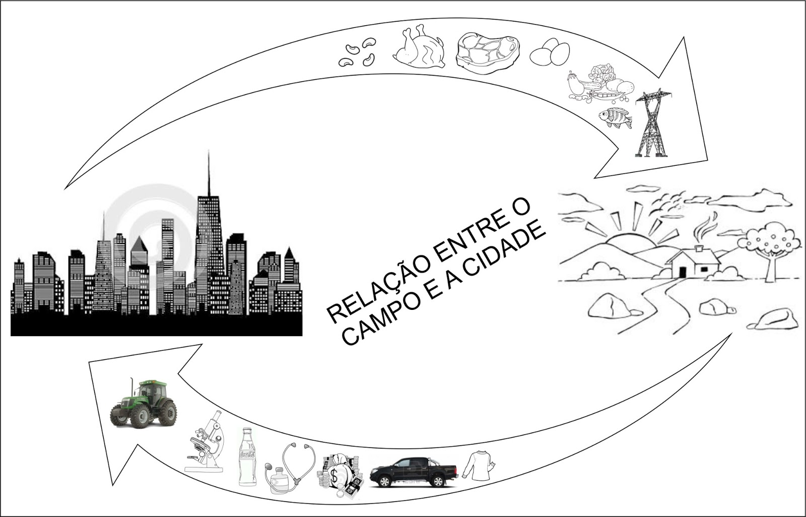

A relação entre campo e cidade é de interdependência, onde ambos os espaços dependem um do outro para suas necessidades e desenvolvimento. O campo fornece alimentos e matérias-primas para a cidade, enquanto a cidade oferece mercado consumidor, tecnologia e serviços para o campo.
Essa relação pode ser vista de várias perspectivas:
Do ponto de vista do campo:
Abastecimento:
O campo é a principal fonte de alimentos e matérias-primas para a cidade, como grãos, frutas, legumes, carne, leite, etc.
Mercado:
A cidade é um grande mercado consumidor para os produtos do campo, garantindo a renda dos produtores rurais.
Tecnologia e serviços:
A cidade oferece tecnologias agrícolas, maquinários, equipamentos e serviços que auxiliam no desenvolvimento do campo.
Do ponto de vista da cidade:
Alimentação:
A cidade depende do campo para o seu abastecimento de alimentos e matérias-primas.
Insumos:
A cidade utiliza matérias-primas do campo para a produção de diversos bens industriais.
Serviços:
A cidade oferece serviços essenciais para o campo, como educação, saúde, comércio e serviços financeiros.
Além disso, a relação campo-cidade é marcada por:
Interdependência:
Ambas as áreas dependem uma da outra para suas necessidades básicas e desenvolvimento.
Troca:
Existe uma troca constante de produtos, serviços e pessoas entre o campo e a cidade.
Dinâmica:
Essa relação é dinâmica e está em constante transformação, com as cidades exercendo influência sobre o campo e vice-versa.
Desafios:
A relação também apresenta desafios, como a concentração populacional nas cidades, a busca por equilíbrio entre desenvolvimento rural e urbano, e a necessidade de políticas públicas que promovam o desenvolvimento sustentável em ambas as áreas.
Em resumo, a relação entre campo e cidade é uma relação de interdependência e troca, onde ambos os espaços desempenham papéis cruciais para o funcionamento da sociedade e para o desenvolvimento econômico e social. .
